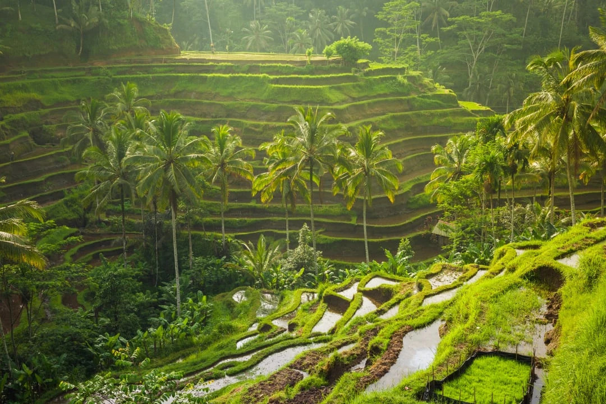

Bali is one of the most visited islands on earth — and one of the most frequently misunderstood. Visitors often book accommodation based on a single photo, only to discover that their chosen area is completely wrong for their travel style. South Bali is nothing like Ubud. North Bali is nothing like either. Each region is a genuinely distinct destination with its own character, activities, atmosphere, and pace. This guide, written from years of living and working on the island, will help you choose the right areas and plan a Bali trip that actually matches what you are looking for.

In This Guide
- South Bali: Beaches, Nightlife & Surf
- Uluwatu & The Southern Peninsula
- Ubud & Central Bali
- North Bali: Waterfalls & Adventure
- East Bali: Temples & Volcanoes
- Mount Batur & Kintamani
- Nusa Penida & Island Hopping
- Getting Around Bali
- Best Time to Visit
- Bali Travel Essentials
- Sample Itineraries
- Frequently Asked Questions
South Bali: Beaches, Nightlife & Surf
South Bali is where most visitors land and where the majority of Bali's tourist infrastructure is concentrated. It stretches along the southwestern coast from Kuta (next to the airport) through Legian, Seminyak, Petitenget, and up to Canggu in the northwest. Each neighbourhood has its own distinct character.
Seminyak — Best All-Round Base
Seminyak is the most polished and internationally sophisticated part of Bali. It has the island's best concentration of high-quality restaurants, boutique hotels, beach clubs (Ku De Ta, Potato Head, Finns Beach Club), and day spas. The beach is wide and attractive, though swimming conditions vary with the tide. Recommended for: couples, families wanting comfort, food lovers, and first-time Bali visitors who want a smooth introduction to the island.
Canggu — Surf Culture & Digital Nomads
Canggu has rapidly transformed from a quiet surf village into one of Southeast Asia's most dynamic neighbourhoods. It mixes rice paddies with trendy cafés, co-working spaces, and consistent left-hand surf breaks at Batu Bolong and Echo Beach. The atmosphere is young, casual, and international. Recommended for: solo travellers, surfers, digital nomads, and those under 35 looking for a social scene.
Kuta — Budget-Friendly But Hectic
Kuta is the closest area to the airport and has the most budget accommodation options. It is also the most chaotic and touristic part of Bali, with aggressive street touts and heavy traffic. The beach is one of Bali's longest but heavily managed. Recommended for: very budget-conscious travellers or those with early morning flights needing to be near the airport.
Sanur — Quiet & Family-Friendly
Sanur is Bali's calmest beach resort area, popular with families and older visitors. The beach has a reef barrier creating gentle, swimmable water. Importantly, Sanur is the main departure point for fast boats to Nusa Penida and Nusa Lembongan, making it an excellent strategic base for those planning island day trips. Recommended for: families, older travellers, and those planning a Nusa Penida excursion.
Uluwatu & The Southern Peninsula
The Bukit Peninsula — the limestone plateau forming the southern tip of Bali — is a dramatically different environment from the rest of the island. Dry, elevated, and rugged, it overlooks the Indian Ocean from cliffs that rise up to 100 metres above the sea. This is where you find Bali's world-famous surf breaks, clifftop temples, and luxury clifftop resorts.

Top Experiences in Uluwatu
- Uluwatu Temple (Pura Luhur Uluwatu) — One of Bali's six key directional temples, perched 70m above the ocean. The evening Kecak Fire Dance performance at sunset is among the most atmospheric cultural experiences in all of Asia.
- Padang Padang Beach — A small, secluded beach tucked below limestone cliffs, accessible through a narrow cave entrance. Featured in the film "Eat Pray Love." World-class left-hand surf break adjacent to the beach.
- GWK Cultural Park — Home to the colossal 122-metre Garuda Wisnu Kencana statue, one of the largest sculptures in the world. The cultural park hosts traditional Balinese dance performances and exhibitions.
- Jimbaran Bay — Famous for candlelit beachfront seafood dinners. Tables are set directly on the sand at twilight as fishing boats bob in the bay — one of the most romantic dining settings in Bali.
Uluwatu Full Day Tour
Our all-inclusive Uluwatu tour combines GWK, Padang Padang, the cliffside temple, the legendary Kecak Fire Dance, and a Jimbaran Bay seafood dinner in a single perfect day.
View Uluwatu TourUbud & Central Bali: The Cultural Heart
Ubud sits in the central highlands of Bali at around 300 metres elevation — noticeably cooler than the coast. It is the spiritual and artistic epicentre of the island, surrounded by emerald rice terraces, river gorges, ancient temples, and traditional villages specialising in sculpture, painting, weaving, and wood carving.

Top Experiences in Ubud
- Tegalalang Rice Terraces — The most photographed rice terraces in Bali. The UNESCO-recognised subak irrigation system creates a stunning cascade of green steps that extends across the valley. Best in the early morning before tour groups arrive.
- Tirta Empul Temple — Bali's most important purification temple, built around a freshwater spring sacred to Hindus. Visitors (respectfully dressed) can participate in the purification ritual, moving between 30 spring water spouts. A profound cultural experience.
- Monkey Forest Sanctuary — A natural forest inhabited by over 700 Balinese long-tailed macaques. Three ancient temples sit within the forest. The monkeys are fascinating but will steal food, glasses, and loose items — your guide will brief you on safe behaviour.
- Ubud Palace & Art Market — The former royal palace hosts traditional dance performances most evenings. The adjacent art market sells local crafts, textiles, and souvenirs at prices that reward confident bargaining.
- Lempuyang Temple (Gates of Heaven) — In East Bali, about 1.5 hours from Ubud. The iconic split gate framing Mount Agung behind is Bali's most photographed image. Arrive before 08:00 for manageable queue times.
Getting Around the Ubud Area
Ubud's main attractions are spread across a wide area — most rice terraces, temples, and craft villages are outside town and require transport. A private driver for the day (Rp 800,000–900,000) is the most practical option and allows you to combine multiple sites efficiently. Bali Real Vacation's private driver packages are specifically designed for Ubud-area exploration.
Explore Ubud & Central Bali at Your Own Pace
Hire a private A/C car and English-speaking driver for the full day. You choose the temples, terraces, and villages — we handle the navigation.
View Private Driver ToursNorth Bali: Waterfalls, Canyoning & Scenic Highlands
Northern Bali is a completely different world from the crowded south. The climate is cooler, the landscape is lush with highland jungle, and the tourist density drops dramatically. This is where you find Bali's most spectacular waterfall, its most thrilling adventure sport, and the tranquil Bedugul lake district.
Sekumpul Waterfall
Bali's most impressive waterfall and one of the most beautiful in all of Southeast Asia. Six separate cascade streams drop 80 metres into a lush jungle ravine. Reaching the base requires a guided jungle trek of about 45 minutes (450+ steps) through spice farms and river crossings — the entire experience is as rewarding as the waterfall itself.
North Bali Canyoning (Gitgit & Sambangan)
Rappelling down active waterfalls through sculpted volcanic rock gorges is the most adrenaline-charged experience available in Bali. The beginner Egar Canyon (Gitgit) has 6 rappels up to 15m and is ideal for families. The advanced Aling Canyon has a single 50m mega-rappel that attracts experienced canyoners from around the world.
Bedugul & Twin Lakes
The Bedugul highlands between Ubud and North Bali contain three lakes — Beratan, Buyan, and Tamblingan — surrounded by misty mountains and traditional villages. The Ulun Danu Beratan Temple, appearing to float on Lake Beratan, is one of the most striking temple images in Bali. The Bedugul area is also the agricultural heart of the island, producing most of Bali's strawberries, flowers, and vegetables.
North Bali Adventure Tours
Trek to Bali's most spectacular waterfall or rappel down active waterfalls in the hidden gorges of North Bali — all with expert guides and full equipment included.
Sekumpul Waterfall Tour North Bali CanyoningEast Bali: Temples, Diving & Sacred Volcanoes
East Bali is the least-visited yet arguably the most spiritually significant part of the island. It is dominated by the imposing profile of Mount Agung (3,031m, Bali's highest and most sacred volcano) and is home to the island's most important temples, ancient royal water palaces, and world-class dive sites.
Key Highlights of East Bali
- Besakih Temple (Mother Temple) — The largest and most sacred temple complex in Bali, located on the southwestern slopes of Mount Agung at 1,000m altitude. Over 80 subsidiary temples surround the main pagoda structure.
- Tirta Gangga Water Palace — A stunning royal water palace built in 1948 with multi-tiered fountains, stepping-stone pools, and lotus ponds. The backdrop of terraced rice fields and Mount Agung makes it one of the most photogenic spots in East Bali.
- Tulamben USAT Liberty Wreck — One of the world's most accessible and famous wreck dive sites. The 120-metre WWII cargo ship lies just 30 metres offshore in 3–30 metres of water, accessible directly from the black sand beach.
- Amed — A quiet string of fishing villages on the east coast with excellent coral snorkeling from the beach, Mount Agung views, and a significantly more relaxed pace than the south. Popular with divers and those seeking authentic Bali.
Mount Batur & Kintamani: The Volcanic Highlands
The Kintamani region in central Bali centres on the vast caldera of Mount Batur (1,717m), an active volcano that last erupted significantly in 1994. The caldera rim offers panoramic views across the volcanic lake and towards Mount Agung. This is one of Bali's most rewarding experiences for adventurous travellers.

Mount Batur Sunrise Trek
Departing from your hotel at 01:30 AM to reach the trailhead by 03:30 AM, the 2-hour ascent under a sky full of stars is an experience that stays with you long after the trip. From the 1,717m summit, watch the sunrise paint Mount Agung and Lake Batur in shades of gold and pink. Breakfast is cooked by your guide using the heat from volcanic steam vents at the summit — one of the most uniquely Balinese experiences available anywhere on the island. The entire experience is moderate difficulty and suitable for most healthy adults.
Kintamani Caldera Views
Even without trekking, the drive to Kintamani offers extraordinary views over the caldera from the rim road. Several restaurants and viewpoints along the rim are popular for lunch stops on private driver tours combining Ubud with the volcanic highlands.
Mount Batur Sunrise Trek
Private transport, certified local guide, flashlights and trekking poles, volcanic steam breakfast at the summit, and bottled water — all included.
View Sunrise TrekNusa Penida & Island Hopping
Just 45 minutes by fast boat from Sanur, Nusa Penida is technically a separate island (part of Klungkung Regency) but is universally included in any serious Bali itinerary. It features the most dramatic coastal scenery in the entire province — towering limestone cliffs, hidden white-sand beaches, and world-class snorkeling with Reef Manta Rays.
The three essential day trip options from Bali are: the West Coast tour (Kelingking, Broken Beach, Angel's Billabong, Crystal Bay), the East Coast tour (Diamond Beach, Atuh Beach, Tree House), and the Snorkeling tour (swim with Manta Rays at Manta Bay and Gamat Bay). All three can be done as separate day trips or combined over 2–3 nights staying on the island.
For a complete planning guide for Nusa Penida — including how to get there, entrance fees, safety tips, and sample itineraries — read our dedicated Ultimate Guide to Nusa Penida.
Getting Around Bali
Understanding Bali's transport options is critical to planning a smooth trip. The island has essentially no public transport outside of tourist shuttle buses between main towns.
Private Car & Driver (Best Option for Day Tours)
A private car with English-speaking driver costs approximately Rp 800,000–900,000 per car per day (8–10 hours, up to 4 passengers). This is by far the most practical way to see multiple sites in a day, especially for North Bali, East Bali, and Ubud day trips. Bali Real Vacation's private driver packages are competitively priced and include an experienced local guide who knows all the best photo spots, local warungs, and traffic-avoiding shortcuts.
Gojek App (Short Trips & Airport)
Gojek is the Indonesian equivalent of Uber and works very well in Seminyak, Canggu, Ubud, Kuta, and Sanur. Download the app before you land and top up the wallet with a local SIM card or international credit card. Important: in some tourist areas (certain temples, beaches, and markets), licensed taxis have territorial agreements that ban Gojek car pickups — in these areas, use Gojek motorbike taxis instead.
Scooter Rental
Available everywhere for Rp 60,000–100,000 per day. Practical for short distances within a single area (e.g., getting around Canggu or Ubud town). Not recommended for inter-area travel across Bali due to heavy traffic, aggressive driving culture, and long distances. An international driving licence is legally required — police checkpoints occasionally fine unregistered foreign riders.
Blue Bird Taxi
The only genuinely metered, honest taxi service in Bali. Reliable in Kuta, Seminyak, and Denpasar. Use the MyBlueBird app to book and avoid street-side taxis (most of which are unmetered and significantly more expensive).
Best Time to Visit Bali
Dry Season: April to October (Peak)
The dry season from April to October offers the most reliable weather, calm seas for Nusa Penida, and the best snorkeling conditions. June, July, and August are peak months with the highest tourist numbers, maximum prices, and the most competitive availability at popular hotels. May and September are the sweet spot — excellent weather with noticeably fewer tourists than July–August.
Wet Season: November to March (Low Season)
Rain typically falls in short afternoon showers lasting 1–2 hours before the sky clears. Mornings are usually fine for sightseeing. The island is noticeably greener, waterfalls like Sekumpul are at their most powerful, and prices at accommodation and restaurants are at their lowest. December–January sees a short tourist spike due to Christmas and New Year holidays — book ahead for this period.
Monthly Quick Reference
| Month | Weather | Crowds | Best For |
|---|---|---|---|
| January–February | Rainy season | Low | Waterfalls, budget travel |
| March | Improving | Low–Medium | Waterfalls, Nyepi festival |
| April | Shoulder | Medium | Good all-round, less crowded |
| May | Dry season begins | Medium | Best value dry season month |
| June–July | Peak dry | High | Snorkeling, Nusa Penida, trekking |
| August | Peak dry | Very High | Best weather, busiest month |
| September | Late dry | Medium | Excellent — best balance of weather and crowds |
| October | Shoulder | Medium | Good weather, Mola Mola at Crystal Bay |
| November–December | Wet season begins | Low–High (Dec) | Budget travel; Dec = Christmas peak |
Bali Travel Essentials
Visa
Most nationalities receive a Visa on Arrival (VOA) at Ngurah Rai International Airport, valid for 30 days and extendable once for another 30 days. Cost: USD 35, payable on arrival in cash (USD, AUD, EUR, or IDR). Apply online in advance at molina.imigrasi.go.id for a slightly faster arrival process. Always check the current visa regulations for your specific nationality before travelling.
Currency & Money
The currency is Indonesian Rupiah (IDR). In 2026, USD 1 ≈ Rp 15,500–16,500 (check live rates). ATMs in tourist areas are widely available and accept international Visa/Mastercard. Licensed money changers in Seminyak and Kuta often offer better rates than hotels. Always use officially licensed changers — unlicensed changers use sleight-of-hand tricks to shortchange tourists.
SIM Card & Internet
Local SIM cards from Telkomsel or XL are available at the airport and in shops everywhere. A tourist SIM with 30+ GB data costs approximately Rp 60,000–100,000. This is essential for using Gojek, offline maps, and WhatsApp to communicate with tour operators. Alternatively, purchase an international eSIM (Airalo, Holafly) before you depart.
Health & Safety
- Water: Do not drink tap water. Bottled water is inexpensive (Rp 5,000 for 1.5L) and widely available. Many hotels provide free filtered water refills — ask at reception.
- Bali Belly: Stomach issues from food or water are the most common health complaint. Stick to cooked food from reputable warungs, avoid ice in uncertain locations, and carry oral rehydration salts.
- Mosquitoes: Dengue fever risk exists year-round, especially in the wet season. Use DEET-based repellent especially at dawn and dusk.
- Sun: The equatorial sun is intense. Apply SPF 50+ daily, wear a hat, and stay hydrated — heat exhaustion is a real risk on full-day tours.
- Travel Insurance: Medical costs in Bali are low by international standards but a decent hospital stay is still expensive. Travel insurance covering medical evacuation is strongly recommended.
Cultural Respect
Bali is a deeply religious Hindu island with active ceremonies taking place almost daily. Dress modestly at all temples — shoulders and knees covered, sarong and sash required. Never step over temple offerings placed on the ground. If you encounter a religious procession, pull over or step aside respectfully. Loud or disrespectful behaviour at sacred sites is taken very seriously by local communities.
Sample Bali Itineraries
5 Days in Bali (Short Break)
- Day 1: Arrive, settle in Seminyak or Canggu, beach sunset
- Day 2: Nusa Penida West Coast day trip (fast boat from Sanur)
- Day 3: Uluwatu Full Day Tour (GWK, Padang Padang, Kecak Fire Dance, Jimbaran dinner)
- Day 4: Private driver to Ubud — Tegalalang Rice Terrace, Tirta Empul, Monkey Forest
- Day 5: Morning free (beach, spa, shopping), afternoon departure
7 Days in Bali (Standard Trip)
- Day 1: Arrive, Seminyak or Sanur, settle in
- Day 2: Nusa Penida West Coast tour
- Day 3: Nusa Penida East Coast tour (or snorkeling with Manta Rays)
- Day 4: Uluwatu Full Day Tour
- Day 5: Ubud — rice terraces, temples, arts villages, Mount Batur viewpoint
- Day 6: Sekumpul Waterfall trek in North Bali
- Day 7: Leisure morning, spa, departure afternoon
10 Days in Bali (Comprehensive)
- Days 1–2: Arrive, Seminyak/Canggu — beach, restaurants, beach clubs
- Day 3: Nusa Penida West Coast
- Day 4: Nusa Penida Snorkeling (Manta Rays)
- Day 5: Nusa Penida East Coast (stay overnight in Ubud or Sanur)
- Day 6: Ubud — cultural day tour (rice terraces, temples, dance performance)
- Day 7: Mount Batur Sunrise Trek (early start 01:30, afternoon free)
- Day 8: North Bali — Sekumpul Waterfall or Canyoning
- Day 9: Uluwatu Full Day Tour
- Day 10: Leisure, spa, souvenirs, departure
Let Us Plan Your Bali Itinerary
Not sure which combination of tours works best for your dates and group? Message us on WhatsApp and we'll design a custom Bali itinerary around your preferences — no obligation.
Get a Free ItineraryFrequently Asked Questions
Seminyak is the best all-around base: excellent restaurants, beach clubs, and easy tour access. Canggu suits a younger, surf-culture crowd. Ubud is for those prioritizing culture over beaches. Sanur is quieter and family-friendly with direct fast boats to Nusa Penida — ideal if you are planning a Penida day trip.
A minimum of 7–10 days. With 7 days: South Bali/Uluwatu, a Nusa Penida trip (1–2 days), Ubud, and a North Bali adventure. Ten days adds the Mount Batur sunrise trek and more relaxed time at each destination.
The dry season (April–October) is best. May and September offer ideal weather with fewer tourists than July–August. The wet season (November–March) is quieter and cheaper, with afternoon showers but excellent waterfall conditions.
A private car and driver (Rp 800,000–900,000/car/day) is the best option for day tours. The Gojek app (like Uber) is excellent for short trips within tourist areas. Scooter rental (Rp 60,000–100,000/day) suits experienced riders only — Bali traffic is heavy and roads vary widely in quality. Blue Bird taxis are reliable and metered in Kuta/Seminyak/Denpasar.
Most nationalities receive a Visa on Arrival (VOA) at the airport for USD 35, valid for 30 days and extendable once. Apply online in advance at molina.imigrasi.go.id for a faster process. Always verify the current visa policy for your specific nationality before travelling.
Indonesian Rupiah (IDR). ATMs are widely available. Licensed money changers in tourist areas offer competitive rates. Cash is essential for local warungs, markets, temples, and smaller shops. Most hotels and tour operators accept credit cards.
Bali is very safe. Violent crime against tourists is extremely rare. Common risks are petty theft in crowded areas, unlicensed money changer scams, and scooter accidents. Use reputable drivers, licensed changers, and secure your valuables.
Shoulders and knees must be covered. A sarong and sash are required — usually available to borrow or rent at the entrance. Many major temples include sarong rental in the entrance fee. Comfortable, lightweight trousers and a light shirt cover all bases.